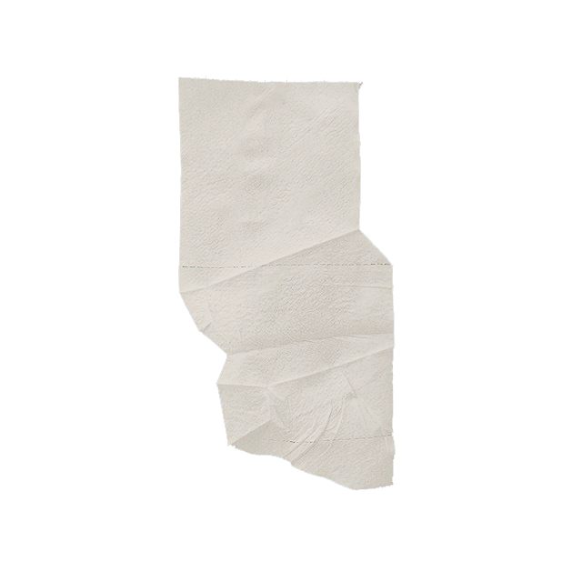
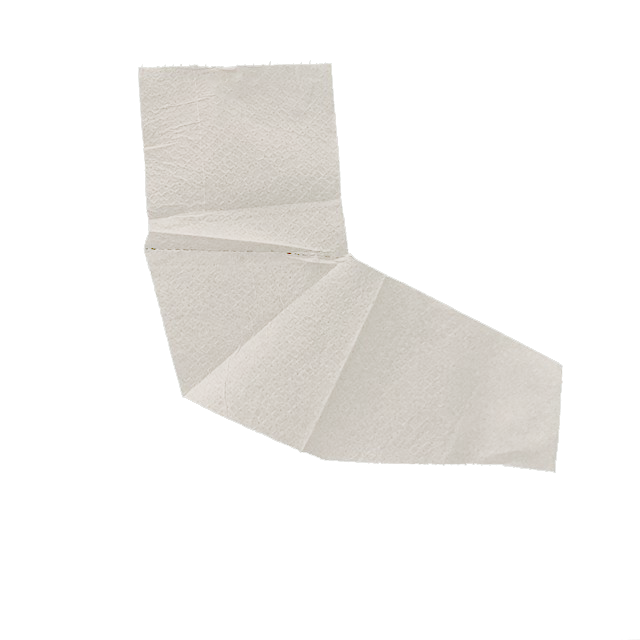
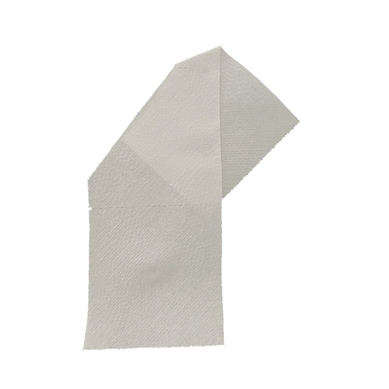
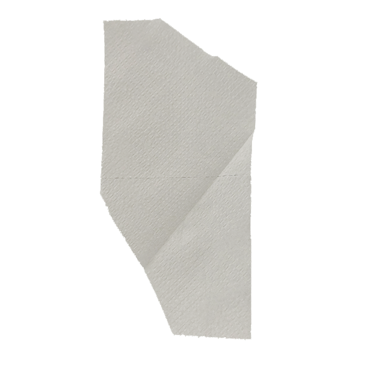

Toilet paper is usually considered a mere utilitarian object—ubiquitous, used, discarded. However, with the escalation of the COVID-19 pandemic in March 2020, toilet paper underwent an immediate change in classification, becoming a premium product sold out in stores nationwide. Toilet Paper is a meditation, a process, and a website inspired by this shift in collective perception. The immediacy of the transformation offered a moment of slowness, of reflection. The last piece of toilet paper on the roll had always been negligible but was elevated overnight into preciousness. I began saving these final pieces, as one does with precious objects, and in doing so, started seeing these pieces as forms of serendipitous folds—as media in and of itself. If you consider toilet paper as media, you can readily see how it shares a form with other, more conventionally understood media such as cassette or VHS tapes, which also feature a long strip wrapped around a cylinder.



